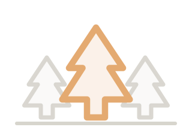

Greg — it’s all yours.
Everything you saw in the driveway, in one place: the story, the assets, the tools, the install, the crew, and the invite. Every file here sits on your machine and answers to you. All local. Full control. No strings.
“You spent this morning giving me my car back with two people and one van. This package is me showing you what two people and one agent can do. Nothing here needs a reply, an invoice, or a committee — it just needs your curiosity. — Tyler”
This page is the honest kind of lock: a courtesy gate, not a fortress. The real security is better than a password — everything below lives locally and is yours outright.
1 · Look
Everything on this page is one scroll. Click to read, right-click → Save As to keep. Nothing installs just to look around.
2 · Run
When you want it live: a Mac or PC, one coffee, three commands — with me sitting next to you, or solo with the card below. Your pace.
3 · Talk
Then just talk. The record-and-mockingbird piece: say what you need in your own words and it builds what it hears. No code. Nothing moves without your yes.
One morning. One agent. Three deliverables.
The dossier I texted you at dawn, the business analysis that followed, and the deck you just watched — all built by the same apprentice, in the same voice, from the same driveway. That’s the product demonstration. The product is below it.
Take everything. It’s yours.
Click to view; right-click → Save As to keep a copy. Nothing here is a trial.
The dossier
Vehicle, situation, credentials — the page that got your Ford authorization moving.
Open →Business analysis
Your shop, read like a system: strengths, frictions, the grove fit, the honest math.
Open →Your morning, written up
Keys and access, the wall, the plain answer — how this helps a shop like yours. Published behind your key.
Open →Today vs tomorrow
The live audit of lockdoctorar.com, the FPO previews, the agentic lifecycle, security & analytics — the whole optimization plan.
Open →Tomorrow’s website, working
A functional preview you can click: pricing ranges, review wall, after-hours intake, call buttons. FPO numbers await Greg’s pen.
Open →End-to-end training
The whole loop taught start to finish — with this morning’s actual voice note playable next to everything it became. Then run with it.
Open →The deck
“Every lock has a key” — the story you just watched, runnable any time (arrows to turn, F for fullscreen).
Open →Bronco key plan
The full originate action plan — fob specs, PATS, the steps your crew is executing.
Open →Spruce Grove marks
The Core Disc, the Grove Mark, the Ghost, the lockups. Use freely — MIT, like everything else.
png · ember · white · svgOne ask, one rule
The dossier holds our IDs. Once the Bronco’s done, delete your copy — we practice what we preach about other people’s data. Deal?
agreed → deleteYour site, today vs tomorrow.
We pointed a real browser at lockdoctorar.com and read it like a system. Today: an AI-generated site on a closed builder — and as captured, the trust counters render “0+ jobs · 0 min · 0 reviews.” Tomorrow: static, fast, owned, maintained by voice. The full plan and a working preview are in this package.

Today · captured live · counters reading zero
Rendered as plain text — can’t silently read zero. Pricing ranges published. After-hours intake on the morning list. NASTF loud. Hours consistent everywhere. Static, portable, yours.
tomorrow — see the FPO →Tomorrow · a working FPO instance in this folder
Six tools. All local. All yours.
These aren’t apps you subscribe to — they’re tasks the apprentice builds inside your business, from files on your machine, and keeps maintaining. Each card ends with the exact first words to say.
1 · The listing audit
Crawls Google, Bing, Yelp, Facebook for Lock Doctor; finds every hours/phone/service mismatch; drafts the exact corrections. You approve, it logs.
2 · The pricing page
Publish ranges for the ten most common jobs. The phone keeps ringing — for booking, not interrogation. Tire-kickers filter themselves.
3 · After-hours intake
Voicemail-to-text lands in a folder; every morning each tech gets a callback list — name, address, vehicle, drafted first response. 10 PM to 6 AM stops being lost leads.
4 · The parts brain
A local brain of fob part numbers, FCC IDs, what’s in which van, what’s running low. “2022 Bronco Sport” returns the right 902 MHz part — the difference between a pass and a booking.
5 · Review follow-through
After each job: a drafted thank-you + review link, ready to send. Every new public review flagged so nothing sits unanswered. You keep the send button.
6 · The Friday one-pager
Jobs, revenue by service, reviews, no-shows, low stock — one page, every Friday, from the CSVs you already have. Five minutes of reading replaces an hour of receipts.
The tactile part — past the screen
Keys and access have always been the trade, and the agent isn’t stuck on web pages. Tell it what to print — 3D printer on the bench, jigs, signage. What to cut — blade blanks, fixtures, templates. What to craft and sell — a handcrafted lock-pick line under your own brand: precision and craft, made sellable. And where vendors leave gaps, it builds small custom tools that route around the middlemen — on your machine, under your yes.
The thirty-minute coffee install
macOS, Linux, or WSL with Python 3.11+. Nothing phones home to survive — offline reinstall wheel, your own git mirrors, MIT license.
# 1. put the grove on the machine git clone https://github.com/t-granlund/SPRUCE-GROVE-OS cd SPRUCE-GROVE-OS uv sync # 2. wake the apprentice uv run spruce-grove # 3. pick a brain in ~/.spruce_grove/grove.cfg — any provider, one line. # (Tyler’s current pick: synthetic.new — tuned his way. Agnostic by design.) # then hand it task #1 from above, word for word.
Prefer watching first? Say the word and Tyler runs the whole thing on your machine with you — training is whatever pace you want, including voice-only, computer closed.
You wouldn’t be the first chair.
The crew so far
Tyler Granlund — grove planter & steward. Design roots at Apple; ran School of Rock’s scale-up (Sterling Partners → Roark Capital / Youth Enrichment Brands); built beauty & health multi-portfolio Head to Toe Brands with two people, him and Dustin. Active free agent.
Cedar — the apprentice. The agent typing this page, the dossier, the analysis, and the deck.
Bentonville Barber Company — full booking site, live on real doors. Benton Drones — lead intake (form → geocode → ticket → dashboard), live.
The open chair — yours. Jonah is the natural first pilot; he already lives in the parts universe.
The Leather Apron Club
The Junto, anno 1727, reborn in Bentonville — tradespeople and builders keeping Franklin’s standing question alive:
“How can the Junto assist you in any of your honorable designs?”
First council: Friday, September 18 · Bentonville Barber Company. Bring the van. Bring the apprentice. The chair’s pulled up.
Run with it.
Today
Say the first tool out loud — Tyler builds it live, free. Or text “not today” and keep the folder with no hard feelings and no follow-up.
This week
Coffee install with Tyler, or solo with the card above. First real task: the listing audit. It runs on real data and waits for your yes.
Friday
First council, September 18, Bentonville Barber Company. See the crew, see the tools, answer Franklin’s question out loud.

{kind=link}
{kind=link}
{kind=link}